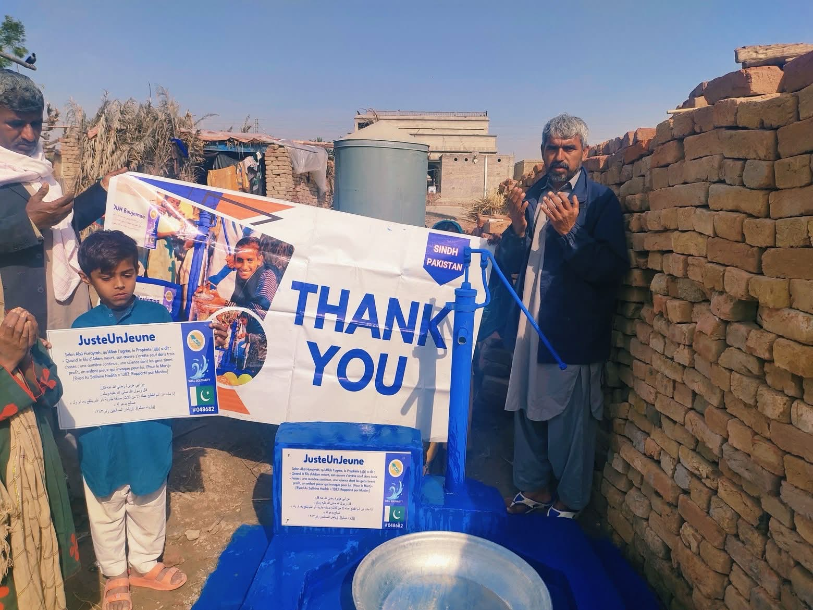

Puits n°1 • Projet réalisé
08/01/26 • Pakistan
Le puits a bien été réalisé grâce aux dons et à la mobilisation de la communauté JUJ. Ce projet permet désormais à des bénéficiaires d'avoir un accès à l'eau potable.

بِسْمِ ٱللَّٰهِ ٱلرَّحْمَٰنِ ٱلرَّحِيمِ
Juste Un Jeune (JUJ) est une association portée par la jeunesse, qui agit toute l'année pour aider les personnes en difficulté avec des actions concrètes, humaines et transparentes.
JUJ rassemble des bénévoles qui veulent transformer l'entraide en actions réelles. Notre priorité est de répondre aux besoins essentiels : alimentation, eau, soutien communautaire et accompagnement des personnes fragilisées.
Nous croyons qu'un engagement régulier, même modeste, peut créer un impact durable. C'est pour cela que JUJ structure ses projets, communique ses avancées et mobilise sa communauté.
Puits n°1 • Projet réalisé
Le puits a bien été réalisé grâce aux dons et à la mobilisation de la communauté JUJ. Ce projet permet désormais à des bénéficiaires d'avoir un accès à l'eau potable.

Arbre fruitier • Projet réalisé
Un arbre fruitier a également été planté à la même date et au même endroit que le puits. Cette action complète notre engagement pour des projets utiles et durables.
Première maraude
Photo de la fin de notre première maraude à Paris. Ce soir-là, nous avons préparé et distribué une centaine de repas.

Un petit geste, un grand impact
Des campagnes centrées sur des besoins clairs et mesurables.
Action utileLes donateurs suivent l'avancement des projets via nos réseaux.
TransparenceJUJ construit une dynamique où les jeunes deviennent acteurs du bien.
Communauté0
€ objectif type pour un puits
0
bénéficiaires minimum par puits
0
% engagement bénévole
Tu peux faire un don, relayer nos actions, ou rejoindre l'équipe bénévole.
Parce que c'est une sadaqa jariya (aumône continue). Cela signifie qu'un don continue de produire des bienfaits dans le temps : un puits donne accès à l'eau durablement, et un arbre fruitier nourrit des personnes pendant des années.
Nous publions des mises à jour régulières sur Snapchat et WhatsApp.
Oui, JUJ privilégie des dépenses directement liées aux actions de terrain.